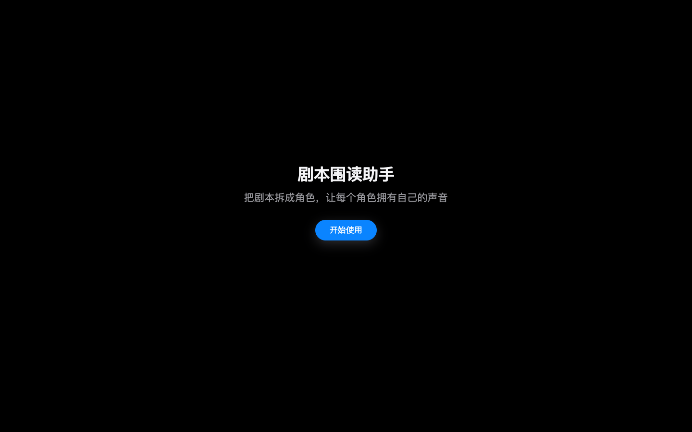
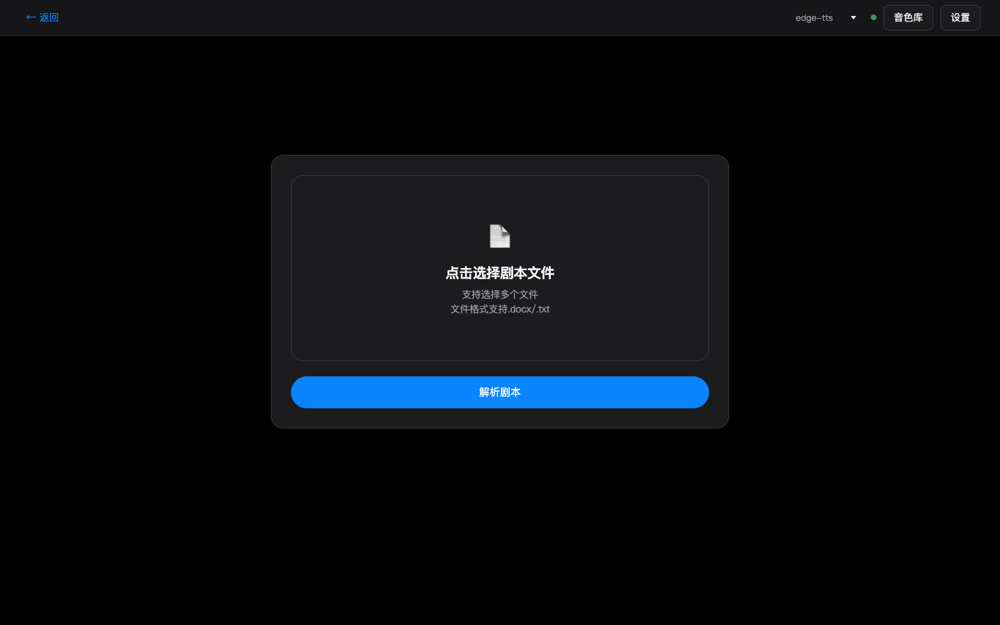
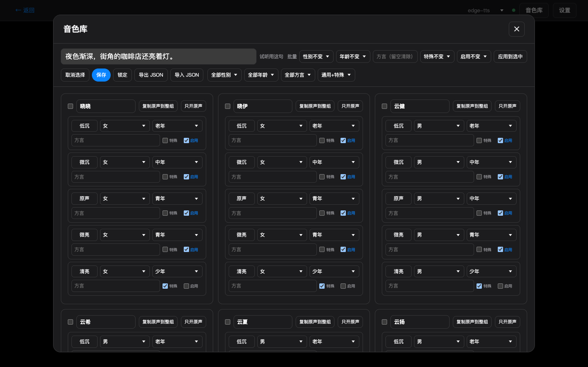

上传剧本，让每个角色拥有自己的声音。这份指南讲清完整流程、核心功能与最容易踩的坑。

00 · 界面
三个关键画面：进入、选择文件、为每个角色准备声音。


01 · 功能
四个核心能力，串起从剧本到围读的整条流水线。
智能拆剧本parsing
按行区分场标、对白、动作与旁白，多集剧本按集排序、独立计场；疑似漏识别的行可一键设为场标或忽略。
声音设计voice design
Qwen 用一句自然语言描述生成种子音色，试听满意后克隆固定，全剧声音统一；edge 模式直接分配，即开即用。
流式围读streaming
边合成边播放，满 25 句即可提前进入围读，后台继续生成；当前句高亮跟随，0.5x-3x 倍速随时调。
跨集存档archive
存档按“剧 → 集”两级落盘，每集独立保存音频与进度；角色音色按 roleBase 身份键跨集复用，音源锁在剧级。
02 · 原则
四句话概括这个工具的设计取舍，也是使用时的判断标准。
03 · 使用技巧
按上传前、合成前、续读前三个阶段排列的高频技巧。
文件名带集号
写“第1集”“第一集”等，多集上传后自动排序并独立计场，否则多集文件容易被当成同集处理。
先跑一集再批量
用一集测试剧本走完流程，确认场标与角色识别无误，再上传后续集数，返工成本最低。
先试听种子音色
Qwen 模式下先为每个角色生成种子音色并试听，满意后再批量合成；种子决定全剧声音统一。
先启用音色位
自动分配只在“已启用”的音色池里找；角色多时先启用更多档位，避免“可用音色不足”。
同剧不换音源
音源锁在剧级，切回续读时不要在同剧内混用 edge 与 Qwen，否则角色声音可能不一致。
存档目录别乱换
默认 ~/Documents/剧本围读存档，第一次保存时自动创建；改目录等于换一套存档，共享要拷贝整个文件夹。
04 · 常见问题
安装、运行与存档的快速对照。
.venv-qwen/bin/python 启动；生成有 180 秒超时并会自动重建 worker，卡住后重试即可，日志在 logs/sr_qwen.log。dist/ 存在；日志都在 logs/ 目录。~/Documents/剧本围读存档，第一次保存时懒创建；换目录等于换一套存档。| 端口 | 服务 | 依赖 |
|---|---|---|
5174 |
前端静态服务 | dist 构建产物 |
9882 |
edge-tts | 联网 |
9883 |
Qwen3 | 本地模型 |
9884 |
存档服务 | Python 标准库 |